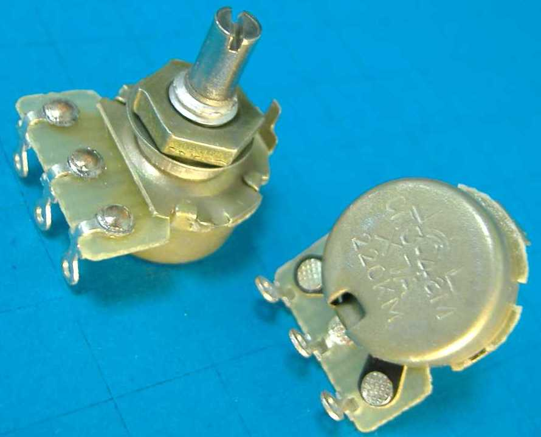
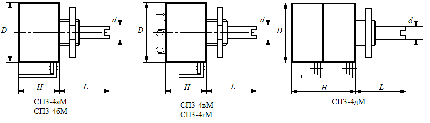

Резисторы СП3-4М
Резисторы переменные регулировочные однооборотные предназначены для работы в электрических цепях постоянного, переменного и импульсного тока. Перемещение подвижной системы - круговое. СП3-4аМ, СП3-4вМ - с выключателем, одинарные, для навесного монтажа; СП3-4бМ, СП3-4гМ - с выключателем, одинарные, для печатного монтажа, СП3-4дМ - сдвоенные, для навесного монтажа.


Рис. 1 - Внешний вид и размеры переменных резисторов СП3-4М
Таблица 1
| Модель | D, мм | H, мм | L, мм | Масса, г не более | Вид конца вала |
|---|---|---|---|---|---|
| СП3-4аМ | 23 | 11,5 | 12,5 | 9,6 | ВС-2, ВС-3 |
| СП3-4аМ | 23 | 11,5 | 20 | 10,6 | ВС-2, ВС-3 |
| СП3-4бМ | 23 | 11,5 | 12,5 | 9,6 | ВС-2, ВС-3 |
| СП3-4бМ | 23 | 11,5 | 20 | 10,6 | ВС-2, ВС-3 |
| СП3-4вМ | 23 | 21,5 | 12,5 | 11 | ВС-3 |
| СП3-4вМ | 23 | 21,5 | 20,5 | 13 | ВС-3 |
| СП3-4вМ | 23 | 21,5 | 25 | 13,5 | ВС-3 |
| СП3-гМ | 23 | 21,5 | 12,5 | 11 | ВС-3 |
| СП3-гМ | 23 | 21,5 | 20 | 13 | ВС-3 |
| СП3-дМ | 23 | 22,5 | 20 | 14,5 | ВС-3 |
Таблица 2
| Модель | Номинальная рассеиваемая мощность, Вт |
Номинальное сопротивление |
Функциональая характеристика |
Допустимое отклонение от номинала, % |
Ряды |
|---|---|---|---|---|---|
| СП3-4аМ | 0,25 | 100 Ом...4,7 МОм | А | ±20, ±30 | E6 |
| СП3-4аМ | 0,125 | 4,7 кОм…1 МОм | Б, В | ±20, ±30 | E6 |
| СП3-4бМ | 0,25 | 100 Ом...4,7 МОм | А | ±20, ±30 | E6 |
| СП3-4бМ | 0,125 | 4,7 кОм…1 МОм | Б, В | ±20, ±30 | E6 |
| СП3-4вМ | 0,25 | 100 Ом...4,7 МОм | А | ±20, ±30 | E6 |
| СП3-4вМ | 0,125 | 4,7 кОм…1 МОм | Б, В | ±20, ±30 | E6 |
| СП3-гМ | 0,25 | 100 Ом...4,7 МОм | А | ±20, ±30 | E6 |
| СП3-гМ | 0,125 | 4,7 кОм…1 МОм | Б, В | ±20, ±30 | E6 |
| СП3-дМ | 0,125 (первый)/ 0,25 (второй) |
100 Ом...4,7 МОм/100 Ом...4,7 МОм | А/ A |
±20, ±30 | E6 |
| СП3-дМ | 0,05 (первый)/ 0,125 (второй) |
4,7 кОм…1 МОм/ 4,7 кОм…1 Мом |
Б, В/ Б, В |
±20, ±30 | E6 |
| СП3-дМ | 0,05 (первый)/ 0,25 (второй) |
4,7 кОм…1 МОм/ 100 Ом…4,7 МОм |
Б, В/ А |
±20, ±30 | E6 |
| СП3-дМ | 0,125 (первый)/ 0,125 (второй) |
100 Ом...4,7 МОм/ 4,7 кОм…1 МОм |
А/ Б, В |
±20, ±30 | E6 |
Таблица 3
| Параметр | Значение |
|---|---|
| ТКС, 10-6 1/°C | ±1000 (до 100 кОм); ±2000 (более 100 кОм) |
| Уровень собственных шумов, не более мкВ/В | 5 (до 10 кОм); 10 (10 кОм…68 кОм); 20 (68 кОм…470 кОм); 30 (более 470 кОм) |
| Напряжение шумов перемещения, не более мВ | 47 |
| Минимальное сопротивление (для резисторов с характеристикой А), Ом |
10, 25, 50, 200 |
| Минимальное сопротивление (для резисторов с характеристикой Б, В), Ом |
12, 50 |
| Начальный скачок, не более % | 10 (хар-ка А); 1; 0,5; 0,1 (хар-ка Б, В) |
| Сопротивление изоляции, не менее МОм | 5000 |
Таблица 4
| Параметр | Значение |
|---|---|
| Температура окружающей среды, °C | -45…+40 (при номинальной нагрузке); -45…+70 (при снижении нагрузки до 0,25Pn) |
| Относительная влажность воздуха, % | до 98 |
| Пониженное атмосферное давление | до 53329 Па |
| Предельное рабочее напряжение постоянного или переменного тока, В | 150 (хар-ка А); 100 (хар-ка Б, В) |
| Износоустойчивость, цикл | 25000 |
| Износоустойчивость выключателей, цикл | 10000 |
| Угол поворота подвижной системы, ° | 270 |
| Наработка на отказ, ч | 15000 |
| Срок сохраняемости, лет | 12 |